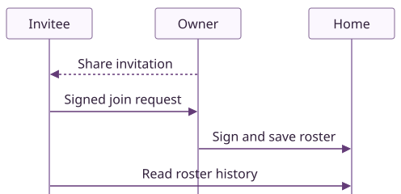

Private groups
An encrypted group on one Home admits individual devices. The owner’s signed membership list determines which devices receive keys for future posts.
Approving a new device
The invitation pins the owner device’s signing key. The invited device returns a signed join request to the owner. The owner approves it in a new roster revision. Members verify the signed roster before using it.

Sending to the roster
Each sending device creates a Megolm session for a roster revision and wraps its session key for each approved device with Olm. Titles, bodies and author labels are encrypted. The Home stores the signed event, ciphertext and wrapped keys. Approved readers fetch pages and decrypt locally.
A membership change during a send
The client checks the roster again before upload. A changed roster requires fresh sessions. The sender can re-encrypt a staged draft for the new recipients while retaining its publication ID. A new member’s history starts at admission. A removed device can retain keys and content it already received.
What the Home sees
The Home can see the group name, roster, sending device, reply links, timing and sizes. Restoring a portable account on another device requires fresh admission. The original owner device manages the roster. Private posts and keys stay outside the public directory and federated feed log.